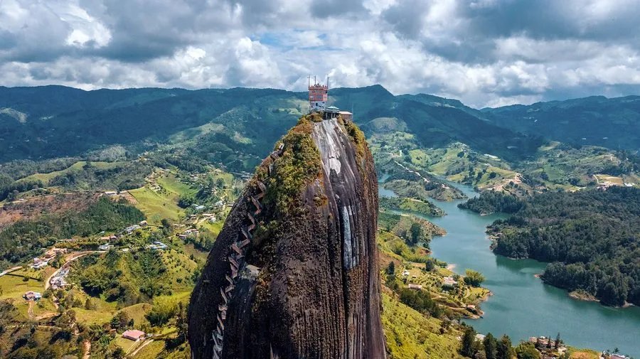
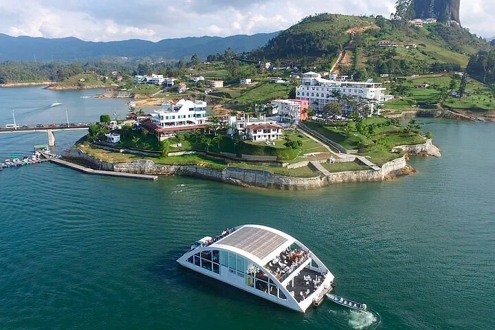

Dag 10–11 · vr 27 – za 28 nov · Zócalos · La Piedra del Peñón · Twee nachten aan het meer
Neem een Uber naar de bushalte in Medellín en daarna de bus naar Guatapé (±2 uur). Een prachtige rit door de Antioquiaanse heuvels langs het Embalse del Peñol-meer.
Guatapé → luchthaven MDE (Rionegro): 45 km, ±1u15. Taxi of Uber, ±€50 samen. Er rijdt geen directe bus — die gaat via Rionegro-dorp met een overstap.
Medellín → MDE: 33 km, 45–60 min (via de Oriente-tunnel soms 25 min). Taxi COP 110.000, Uber 80–110K, of de Combuses-luchthavenbus voor COP 20.000.
Medellín → Guatapé: ±70 km, ±2u met de bus vanaf Terminal del Norte.
Waarom dit telt: Rionegro ligt tussen Medellín en Guatapé in. Rij je terug naar Medellín en dan pas naar de luchthaven, dan ben je drie uur onderweg. Rechtstreeks vanuit Guatapé is het 1u15 — bijna twee uur winst.

Een van de indrukwekkendste rotsformaties ter wereld: een 200 meter hoge granieten monoliet uit het water rijzend. Met een tuktuk naar de voet en dan 740 treden omhoog via een smalle trappengang in een spleet van de rots. Boven wacht een spectaculair panorama.
Wat is het? El Peñol (of La Piedra del Peñón) is een enorme granieten monoliet van 200 meter hoog die uit het Embalse del Peñol-meer rijst. Gevormd door magma 65 miljoen jaar geleden. Een van de meest iconische plekken van Colombia.
De klim: 740 treden via een smalle spleet tussen de rotsen. Metalen trap die zigzaggend naar boven loopt. Ongeveer 20-30 minuten klimmen. Neem water mee!
Boven: Restaurant, souvenirwinkels en een ongelooflijk panorama over het kunstmatige meer met zijn eilandjes en de kleurrijke stad Guatapé beneden.
Tuktuk: Neem een tuktuk van het centrum van Guatapé naar de voet van La Piedra.
Guatapé is de kleurrijkste stad van Colombia. Elk huis heeft unieke ingekleurde reliëf-panelen (zocalo's) op de onderkant van de gevels die taferelen uit het dagelijkse leven verbeelden. Wandel door de straatjes en bewonder de details.
Twee nachten in Guatapé, dus dag 11 is er geen haast. De ochtend van dag 12 rijd je rechtstreeks naar luchthaven MDE in Rionegro (45 km, ±1u15) — Rionegro ligt tussen Guatapé en Medellín, dus de stad in rijden kost je bijna twee uur extra. Regel de transfer de avond ervoor via je accommodatie.

Het meer waar La Piedra uit oprijst is geen natuurlijk meer: in 1972 werd de Río Nare afgedamd voor waterkracht — vandaag goed voor zo'n dertig procent van Colombia's elektriciteit. Het oude dorp Viejo Peñol verdween daarbij onder water. Vanaf de Malecón vertrekken boten voor een tocht van ongeveer drie uur over het meer: de perfecte manier om bij te komen na 740 treden.
El Cruz — een kruis dat het verdronken dorp Viejo Peñol markeert. Bij laag water steken de resten van het oude dorp boven het wateroppervlak uit.
Museo del Viejo Peñol — in een 200 jaar oud huis, het enige gebouw van het oude dorp dat boven de waterlijn bleef. Binnen hangen foto's van hoe het er vroeger uitzag.
Hacienda La Manuela — de ruïnes van Pablo Escobars vakantiehuis aan het meer, uitgebrand en vervallen. De meeste boten varen er langs.
Een eiland in het midden van het meer hoort ook bij de standaardronde.
De grote partyboten hebben meerdere dekken, een bar, een stevige geluidsinstallatie en soms een dansvloer met live muziek. Ze varen niet ver — meestal blijven ze in het diepere water vlak voor het dorp. Uitstekende manier om Colombiaanse paisas te leren kennen, minder geschikt als je van stilte houdt.
Kayak is het rustige alternatief. Lake View Hostel (Cra 22 #29B-29) verhuurt kayaks en organiseert daarnaast fietstochten, zwemplekken en een bezoek aan Escobars oude finca.
Timing: doordeweeks vertrekken de boten meestal pas na de lunch. In het weekend, als Guatapé volloopt met dagjesmensen uit Medellín, varen ze de hele dag en zitten ze sneller vol.
Combineren met La Piedra: klim 's ochtends vroeg (minder volk, koeler), lunch in het dorp, boot in de namiddag. Zo heb je de zwaarste inspanning achter de rug voordat je op het water zit.